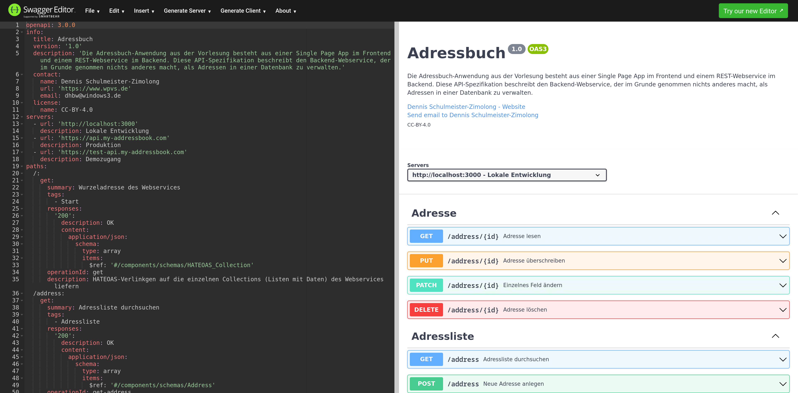
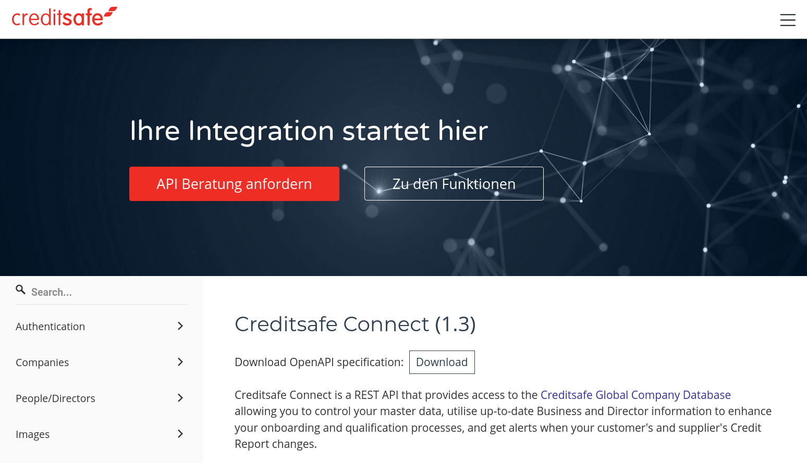
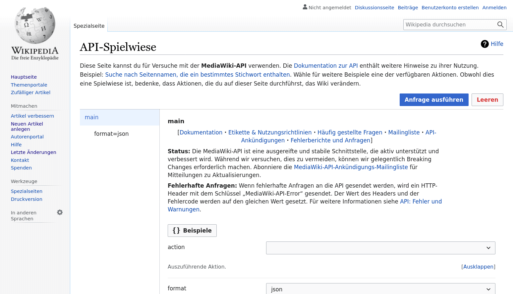

Während SOAP-Webservices von Anfang an mit der **Webservice Definition Language**
(meist einfach nur WSDL abegkürzt) in einem maschinenlesbaren formal beschrieben wurden,
gab es für REST-Webservices lange Zeit keinen vergleichbaren Standard. Dabei bietet
eine formale Beschreibung oftmals folgende Möglichkeiten:
* Generieren von Client-Code zum Aufruf des Webservices
* Generieren von Server-Code zur Implementierung des Webservices
* Automatische Validierung von Anfragen und Antworten
* Generieren statischer Dokumentationsseiten
* …
Als möglichst leichtgewichtiger Ansatz kamen REST-Webservices lange ohne eine
formale Beschreibung und entsprechende Werkzeuge aus. Meistens wurden sie einfach
nur in Prosatext auf einer Begleitwebseite beschrieben, sofern es sich um öffentliche
APIs handelt (vgl. z.B. die Wikipedia API). Inzwischen hat sich jedoch das
**OpenAPI-Format** (vormals Swagger genannt) als De-Facto-Standard durchgesetzt.


